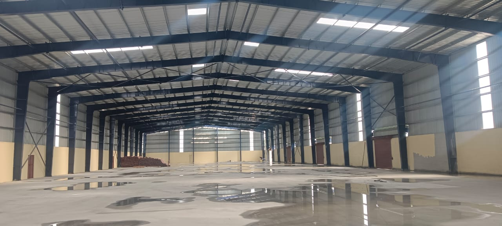
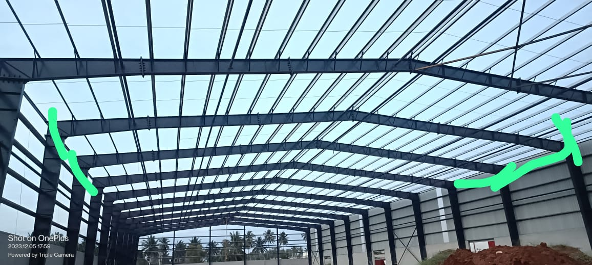
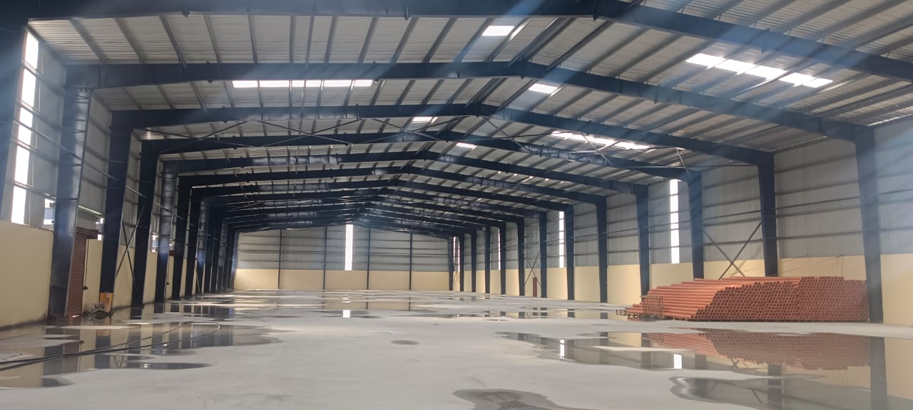

Applications of PEB
Pre-engineered buildings are widely used in:




Pre-Engineered Buildings (PEBs) are **factory-made steel structures** that are fabricated off-site and assembled on-site. These buildings are **lightweight, cost-effective, and fast to construct**, making them ideal for industrial, commercial, and warehouse projects.
Pre-engineered buildings are widely used in:


